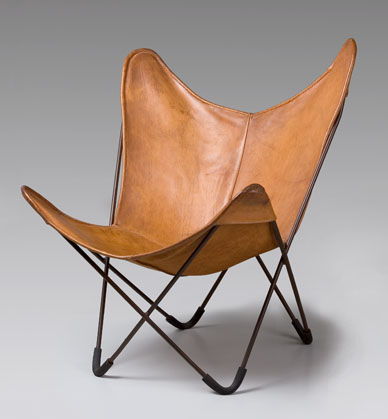

The Chairs
Timeline
1938
BKF Chair
Bonet, Kurchan, Ferrari Hardoy
1944
W Chair
César Jannello
1967
Madrid Chair
Horacio Baliero, Justo Solsona
1969
Stilka Armchair
Ricardo Blanco
1970
LP Chair · Dining Chair
Ricardo Blanco · Alberto Churba

Featured piece
BKF Chair
Designers — Antonio Bonet, Juan Kurchan, Jorge Ferrari Hardoy
Year — 1938
Material — Iron and leather
Also known as — Butterfly chair
Origin — Argentina
Designed by three architects in 1938, it became the most internationally recognized piece of Argentine design.